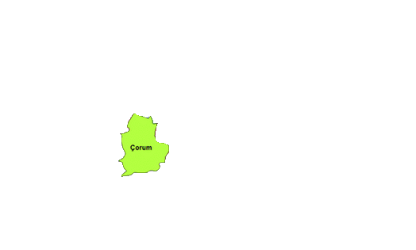
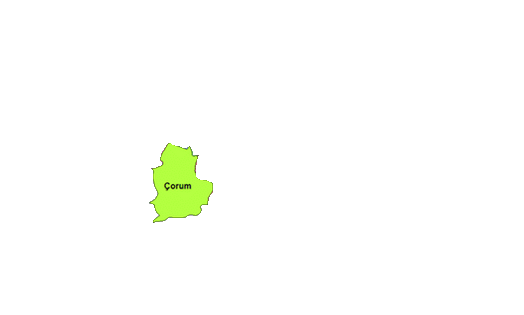
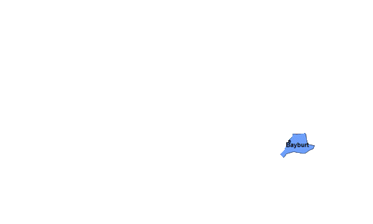
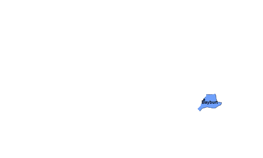

Karadeniz Bölgesi
Coğrafi Konumu
Bölge, Türkiye’nin kuzeyindedir. İsmini kuzeyindeki Karadeniz’den alır. Bölge, doğuda Gürcistan sınırından başlayarak, batıda Sakarya Ovası ile Bilecik’in doğusunda kadar uzanır.
Türkiye yüzölçümünün % 18'ine sahip olan bölge, bu oranla yüzölçüm bakımından üçüncüdür. Doğu - batı istikametinde en uzun olan bölgemizdir. Bölge, batıdan doğuya doğru yaklaşık 1400 km lik uzunluğa, kuzey - güney istikametinde ise 100 - 200 km arasında değişen genişliğe sahiptir.
Yeryüzü Şekilleri
Bölgenin yeryüzü şekillerini III.jeolojik devirde Alp kıvrımları sonucu oluşan doğu- batı yönündeki Kuzey Anadolu Dağları ile bu dağlar arasındaki oluklar oluşturmaktadır.
Batıda üç kuşak halinde uzanan bu dağlar kuzeyden güneye doğru; Küre, Bolu-Ilgaz ve Köroğlu dağları şeklindedir. Ortada Canik Dağları ve Doğuda ise iki kuşak halindedir. Bunlar; kuzeyde Giresun-Rize Dağları, güneyde ise Mescit, Kop ve Çimen dağları şeklindedir.
Karadeniz boyunca uzanan dağların yükseltileri batıda 2000 m civarında olup, Orta Karadeniz'de 1000 m'ye kadar inmekte, doğuda ise yükselti 4000 m'ye çıkmaktadır (en yüksek yer Rize’de Kaçkar dağıdır).
Dağların kıyıya paralel uzanması sonucunda kıyılar fazla girintili - çıkıntılı değildir. Küçük koylar hariç, kıyılarda önemli girinti ve çıkıntı yoktur. Bu nedenle Sinop limanı dışında, büyük gemileri barındıracak doğal limandan yoksundur..
Güçlü dalgalar, kıyıda falez oluşumuna neden olur. Kıyılar boyuna kıyı tipi özelliğini taşır. Kızılırmak ve Yeşilırmak ağzında oluşan deltalar dışında, kıyı çoğu yerde diktir.
Bölgenin kuzeye bakan yamaçlarında, yamaç yağışları artmıştır.
Kıyı kesim ile iç kesim arasında önemli iklim farklılıkları ve buna bağlı olarak da tarımı yapılan ürün çeşidinde değişiklikler görülmektedir.
Yağış ve eğimin fazla olması, zeminde killi toprağın bulunması, bölgede heyelanlara yol açar. Heyelan olayının en fazla görüldüğü bölgemizdir.
Dağların yükselti ve doğrultusu, ulaşım, iklim ve tarımsal faaliyetleri de etkiler. Orta Karadeniz dışında ulaşım Zigana (Kalkanlı) ve Kop geçitler gibi önemli geçitlerden sağlanmıştır. Zigana geçidi Trabzon'un gelişmesine neden olmuştur.
Sinop, doğal limana sahip olduğu halde, dağların ulaşımı zorlaştırması nedeniyle diğer liman kentleri kadar gelişmemiştir .
Dağların kıyıya paralel olması tarım alanlarını sınırlandırmıştır. Dağlarda eğimin fazla olması makineli tarımı zorlaştırmıştır. Bölgede hayvan ve insan gücüne halâ ihtiyaç duyulmaktadır.
Dağların geniş yer kaplaması büyük kentlerin kurulmasını önlemiş, kentlerin kıyıda birbirine yakın ve küçük olmasına yol açmıştır.
Toprak Özellikler
Bölgede, iklime bağlı olarak asit tepkime (reaksiyon) gösteren, koyu renkli, humus bakımından zengin yıkanmış çeşitli topraklar bulunur. Kuzey Anadolu Dağları’nın fazla yağış alan kuzey yamaçlarında boz ve esmer renkte kireçsiz orman toprakları yaygındır. Toprak yüzeyinde kimyasal reaksiyonun fazla olması, toprak katmanlarının kalınlaşmasını kolaylaştırır. Aynı dağların güneye bakan yamaçlarında yağışın azalması ve güneş radyasyonunun artmasıyla kireçli kahverengi orman toprakları bulunur. Batı Karadeniz Bölümü’nde de podzol topraklarına rastlanır.
Akarsu ve Gölleri
Bölgenin en önemli akarsuları, Çoruh( Türkiye'nin en hızlı akışlı akarsuyudur), Yeşilırmak, Kızılırmak, Bartın(Üzerinde ulaşımın yapılabildiği tek akarsuyumuzdur) ve Yenice (Filyos) çayları ile bir bölümü bölgede yer alan Sakarya'dır.
Kaynağını dağ sıralarının denize dönük yamaçlarından alan akarsular bol yağış ve eğim nedeniyle, gürdür. Ancak küçük dereler halindedir.
Bölgede göller az ve küçüktür. Başlıcaları; Tortum, Sera, Abant ve Yedigöller (heylan set gölleri),
İklim ve Bitki Örtüsü
Bölgede Karadeniz iklim şartları etkilidir. Her mevsim yağışlıdır. Yıllık sıcaklık farkı azdır. Yazları serin, kışları ılıktır.
Türkiye'nin en fazla yağış alan bölgesi Karadeniz'dir. İl olarak Rize (2400 mm)en fazla yağış alan ilimizdir ( Sebebi güneyindeki yüksek dağların hakim rüzgar yönüne dik olmasıdır.) Yıllık yağış miktarı 1500 mm kadardır.
Dağlar kıyı kesimin nemli havasının iç kısımlara geçmesini engeller Bölgenin kıyı ile iç kesimleri arasında önemli iklim farkları görülür.
Kıyıdan iç kesimlere doğru gidildikçe hem yağış oranı azalmakta, hem de karasallık nedeniyle sıcaklıklar düşmektedir. Karasal iklimin görüldüğü yerlerde yazlar sıcak, kışlar soğuk ve kar yağışlıdır.
Dağların yükselti ve doğrultusu nedeniyle Orta Karadeniz'de denizel iklimin yayılma alanı, Doğu ve Batı Karadeniz'e oranla daha geniştir.
Orta Karadeniz Bölümü'nde dağların iç kısımlardan başlaması nedeniyle yağış miktarında azalma görülür. Yıllık yağış 700 mm'ye kadar iner. Batıya doğru yağışlar tekrar artış gösterir, yıllık 1000 mm'yi geçer.
Doğu Karadeniz'in kıyı kesiminde kış sıcaklık ortalamaları fazla düşmediğinden burada narenciye (turunçgiller) tarımı yapılabilmektedir.
Bölgede dağların denize bakan yamaçları bol yağış aldığından gür ormanlarla kaplıdır. İç kısımlara gidildikçe soğuğa dayanıklı ağaç türleri ile bozkırlar bitki örtüsünü oluşturur. Kıyıdan yamaç boyunca yükseldikçe sıcaklığın düşmesine bağlı olarak bitki örtüsünün değiştiği görülür. Kıyıdan 800 metre yüksekliğe kadar olan alanda yayvan yapraklı ağaçlar, 800 - 1500 metre arasında karışık yapraklı ,1500-2000 metreye kadar olan alanda iğne yapraklı ağaçlar, 2000 metreden sonra ise dağ çayırları görülmektedir.
Bölgenin yağış dağılışında hakim rüzgâr gönü ile yamaçların konumu ve yükseltisi en önemli etkenlerdir. Batı Karadeniz ile Doğu Karadeniz'in yıllık ortalama yağış miktarının Orta Karadeniz'den fazla olmasında; Batı ve Doğu Karadeniz'de kıyının hakim rüzgâr yönüne dik uzanması ve yükseltinin artması rol oynar. Kıyılardaki yağış miktarının fazla ve düzenli oluşuna bağlı olarak; Akarsuların debileri yüksektir. Tarımda sulama fazla gerekmez ve nadas tarımı çok az görülür. Orman alanları geniştir.Orman yangınları görülmez.
Nüfus ve Yerleşme
Bölgede 2000 nüfus sayımına göre 8 439 213 kişi yaşamaktadır. Nüfus yoğunluğu Türkiye ortalamasının altındadır. Fakat Orta ve Doğu Karadeniz bölümlerinin özellikle kıyı kesimlerinde nüfus yoğunluğu fazladır.
Doğal koşullar nedeniyle nüfusun büyük bölümü kıyıda toplanmıştır. İç kısımlar kıyılar kadar yoğun nüfuslu değildir.
Kıyı ovaları, maden ve endüstri bölgeleri yoğun nüfusludur. Bölgede doğal koşullar nedeniyle şehirleşme oranı düşüktür.
Bölgede genel olarak dağınık yerleşme görülür
Bölge nüfusunun yaklaşık %70'i kırsal kesimde oturur. Türkiye genelinde en fazla kırsal nüfusa sahip bölgedir. En önemli şehir merkezleri kıyı şeridindedir. Bunlar Samsun, Zonguldak ve Trabzon'dur. Bölgedeki tarım alanlarının sınırlı oluşu, hızlı nüfus artışı, endüstrinin gelişmemesi, açık deniz balıkçılığının yapılamayışı, bölgeden diğer bölgelere (özellikle Marmara'ya) yoğun göçlere neden olmaktadır.
Diğer bölümler göç verirken Batı Karadeniz göç almaktadır. Sebepleri: Ereğli-Zonguldak taşkömürü havzalarının varlığı, Karabük ve Ereğli'de demir -çelik endüstrisinin gelişmesidir.
Orta Karadeniz Bölümü dışında iç kesimler seyrek nüfusludur. Orta Karadeniz'de ise, küçük ovaların iç kesimlerde de yer alması nüfusun kıyı ile dengelenmesini sağlamıştır.
Bölgede iç kesimlerde toplu, kıyıda dağınık yerleşme görülür. Yurdumuzda dağınık yerleşmenin en fazla görüldüğü bölge Karadeniz Bölgesi , bölüm ise Doğu Karadeniz Bölümüdür.Bu durum yağışın bol, arazinin engebeli olması ve tarım alanlarının dağınık olmasından kaynaklanır.
Tarım
Her mevsim yağış görülmesi, yaz kuraklığı isteyen (buğday, arpa, yulaf, çavdar, mercimek, pamuk) ürünlerin yetişmesini önlemiştir. Kıyı kesimde tahılın yerini mısır almıştır.
Kış mevsiminde Doğu Karadeniz'de kış ılıklığı fındık, çay, turunçgil, zeytin gibi ürünlerin yetişmesini kolaylaştırmıştır. İç bölgelerde yağış azlığı orman örtüsünün azlığına, tahıl ve şekerpancarı gibi ürünlerin öne çıkmasına yol açar. Bölgede çalışan nüfusun %70'i geçimini tarımdan sağlamaktadır. En verimli tarım arazileri kuzeye bakan yamaçlarda görülür.
Bölgede Yetişen Başlıca Tarım Ürünleri
Fındık : Trabzon, Giresun ve Ordu başlıca üretim alanlarıdır. Türkiye toplam üretiminin % 83'ü bölgeden karşılanır.
Çay : Giresun'dan Gürcistan'a kadar olan kıyı şeridinde yetiştirilir. Rize çevresinde yoğunlaşır. Türkiye toplam çay üretiminin %100'ü bu bölgeden karşılanır. Tabii ekim alanı en dar olan ürünlerimizdendir.
Tütün : Daha çok Orta Karadeniz Bölümü'nde (Samsun, Amasya ve Tokat çevresi) yetiştirilir. Ayrıca Batı Karadeniz'de Düzce dolaylarında da üretimi yapılır. Türkiye toplam tütün üretiminin %15'i bölgeden karşılanır.
Mısır : Bütün kıyı boyunca yetiştirilir. Halkın temel besin maddesi olduğu için bölge ticaretinde önemi yoktur.
Elma : Bölgede Amasya başta olmak üzere Kastamonu ve Tokat çevresinde yetiştirilir.
Şekerpancarı: Amasya, Tokat, Kastamonu çevresinde tarımı yapılmaktadır.
Keten-kenevir: Kastamonu başta olmak üzere Sinop, Zonguldak çevresinde tarımı gelişmiştir.
Soya Fasulyesi: Ordu- Giresun çevresinde tarımı yapılmaktadır.
Zeytin: Soğuktan korunmuş Çoruh vadi oluğunda ( Artvin -Yusufeli) tarımı yapılır.
Turunçgiller: Kış ılıklığı sebebiyle Rize çevresinde tarımı yapılır.
Kivi: Son yıllarda Rize ve Trabzon çevresinde tarımı yapılmaya başlamıştır.
Hayvancılık
Bölgede hayvancılık faaliyeti önemli bir ekonomik etkinliktir. Kıyı kesiminde bitki örtüsünün gür olması, yüksek dağ çayırlarının bulunması ve arazinin engebeli olması ve nemli iklim nedeniyle büyükbaş hayvancılık yapılır.
Büyük baş hayvancılık ön plandadır.
Bölgenin kuzeyindeki Karadeniz, balık potansiyeli bakımından zengindir. Türkiye balık üretiminin yaklaşık % 80'i Karadeniz'den karşılanır. Son yıllarda aşırı avlanma ve denizin kirlenmesi nedeniyle balık üretiminde düşme görülmüştür. Karadeniz'de 200 m den daha derinlerde zehirli gazlar sebebiyle canlı hayatı yoktur.
Küçükbaş hayvancılık bölgenin iç kesimlerindeki ovaların kenarlarında yaygındır.
Arıcılık faaliyetleri de bölgede gelişmiştir.
Özellikle Rize-Anzer yöresinin balları çok ünlüdür.
Sanayi
Demir - çelik : Divriği (Sivas)'den çıkarılan demir cevheri, Samsun limanı vasıtasıyla taşınarak Karabük ve Ereğli'deki fabrikalarda işlenir.
Bakır : Murgul (Artvin)'daki bakır cevheri, bu yörede kurulan bakır fabrikasında işlenir. Küre (Kastamonu)'de çıkarılan bakırlar ise Samsun bakır işletmelerinde işlenir ( Sebebi Samsun'un iç kesimlere olan bağlantısının kolay sağlanmasıdır).
Şeker : Karadeniz Bölgesi'nde üretilen şekerpancarı Turhal (Tokat), Suluova (Amasya) ve Kastamonu şeker fabrikalarında işlenir.
Tütün : Karadeniz'in, özellikle Orta Karadeniz Bölümü'nün tütünleri, Samsun ve Tokat'taki sigara fabrikalarında işlenir.
Fındık İşleme : Giresun çevresinde gelişmiştir.
Çay : Rize ve yöresinde toplanmıştır.
Kağıt : Aksu ( Giresun), Çaycuma (Zonguldak) ve Taşköprü (Kastamonu) da bulunmaktadır.
Kereste-tomruk : En fazla Batı Karadeniz Bölümünde gelişmiştir ( Sinop, Bartın, Zonguldak, Bolu, Düzce ve Kastamonu çevresinde).
Bölge, maden kömürü, bakır, orman ve deniz ürünleri, çay, fındık, tütün, demir - çelik, keten - kenevir, pirinç, soya fasulyesi bakımından ülke ekonomisine önemli bir katkı sağlar.
Yer şekillerinin ulaşımı engellemesi, doğal limanlardan yoksun olması, ana ulaşım yollarına sapa kalması. Karadeniz Bölgesi'nin gelişimini yavaşlatmıştır.
Yeraltı Zenginlikleri
Taşkömürü : Ereğli - Zonguldak havzasından çıkarılır. Önemli bir kısmı demir-çelik üretiminde enerji kaynağı olarak kullanılır. Ayrıca Çatalağzı Termik Santralinde de taşkömürü kullanılmaktadır.
Bakır : Murgul (Artvin), Küre (Kastamonu)'de çıkarılmaktadır.
Linyit : Merzifon (Amasya) ve Havza (Samsun) çevresinden çıkarılmaktadır.
Manganez: Demirin sertleştirilmesinde kullanılır. Zonguldak-Ereğli ve Artvin-Borçka çevresinde çıkarılır.
Turizm
Karadeniz Bölgesi'nin turizm potansiyellerinin başında tabii güzellikler gelir. Karadeniz kıyıları çok çeşitli bitki ve ağaçlar ile bunların oluşturduğu manzaralara sahiptir. Yaylacılık faaliyetleri son yıllarda gelişen turizm faaliyetlerinden biridir.
Bolu Kartalkaya'da ve Ilgaz Dağları'nda kış turizmi yaygındır. Abant gölü ile Yedigöller çevresindeki sayfiye yerleri, Bolu, Düzce, Kızılcahamam kaplıcaları, Amasra, Cide, Sinop Trabzon (Sümela Manastırı) ve Amasya'da (Kral mezarları) yer alan tarihi eserler Karadeniz Bölgesi'nin turizm potansiyellerini oluşturur.
Çoruh nehrinde rafting yapılmaktadır.
Her mevsim yağışlı olmasından dolayı deniz turizmi gelişmemiştir.
Bölümleri
DOĞU KARADENİZ BÖLÜMÜ
Gürcistan sınırından başlayarak Ordu'nun doğusundaki Melet çayına kadar uzanır. Karadeniz'in en dağlık ve yükseltisinin en fazla olduğu bölümüdür.
En fazla yağış alan, kıyı ile iç kesim arasında farklılığın en fazla olduğu bölümdür.
Heyelan olayının en fazla olduğu bölümdür.
Tarımda makinalaşmanın en az geliştiği bölümdür.
Kırsal nüfusun ve dağınık yerleşme şeklinin en fazla olduğu bölümdür.
Bölümün en gelişmiş kentleri Rize ve Trabzon'dur. Doğu Karadeniz'in Türkiye ekonomisine en önemli katkıları tarım alanındadır.
ORTA KARADENİZ BÖLÜMÜ
Melet çayından Sinop'un doğusuna kadar uzanır. Doğu Karadeniz Bölümü'ne göre güneye daha fazla sokularak Tokat ve Çorum illerinin büyük bölümleri ile Amasya ilinin tamamını içine alır.
Yer şekilleri Doğu ve Batı Karadeniz'e oranla daha sadedir. Dağların yükseltisi azalmış ve dağlar içeriye çekilmiş durumdadır. Bunun sonucunda tarım alanları ve ulaşım çok gelişmiştir. En gelişmiş şehri Samsun'dur.
Bölgenin en az yağış alan, kıyı ile iç kesim arasında farklılığın en az olduğu bölümdür.
Türkiye ekonomisine katkısı daha çok tarım alanındadır.
BATI KARADENİZ BÖLÜMÜ
Kızılırmak deltasının batı kenarından başlayıp Adapazarı ve Bilecik'in doğusuna kadar uzanır. Bölüm genel olarak dağlıktır.
En gelişmiş şehri Zonguldak'tır. Orman ürünleri ve ormancılık önemli gelir kaynağıdır. Bolu ve Düzce çevresinde çok sayıda kereste fabrikası bulunmaktadır. Zonguldak çevresi maden çıkarımı, Ereğli -Karabük çevresi maden işletmeleri ile Türkiye ekonomisine önemli katkıda bulunur.
Batı Karadeniz'in en önemli katkısı ise maden çıkarma ve işleme alanındadır.
 


 
